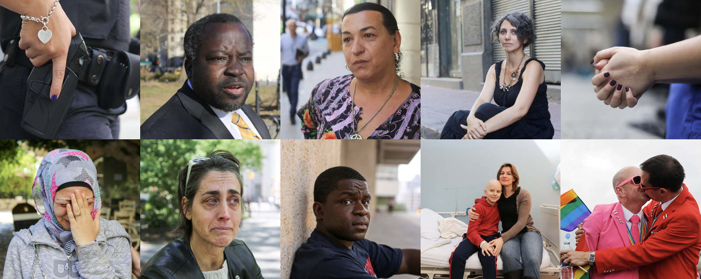

Team
Maheen Sohail
Date
Spring 2017
Project Length
2 weeks
Role
Visual Design, Product Strategy, UX, Copywriting
Tools
Sketch, Illustrator, Keynote
Deliverables
Presentation Slides
Project Description
Facebook Causes is an extension of Facebook's social good services with the aim to empower users to share original stories, publicly or anonymously. As a tool, Causes improve the discoverability of nonprofit organizations/campaigns and help lower the barrier for everyday users to become the social activists of tomorrow. We believe that anonymity, if done carefully, can be leveraged to support the emotional and physical wellbeing of others.
My Role
In this project, I conducted research, developed the copy, contributed to the product strategy, and helped create low-high fidelity mockups for specific user flows. Because our experiences can sometimes be traumatic, I conducted research on victims of trauma, counselling, and psychotherapy to better understand how we share and listen to stories. With the intent to create a safe space, this research helped inform the tone and voice of the copy found in our user flows. My partner and I both contributed to the UX, creating user flows and high fidelity mockups.

In 2015, I worked on a project, SnapForGood, that similarly aimed to provide tools for causes and campaigns on our social platforms. After SnapForGood, I was curious to explore this concept further with other types of social media, and am happy to have developed this idea further into Facebook Causes.
This project brought along a series of challenges, from speaking to designers at Facebook and developing an in-depth understanding of Facebook’s product ecosystem and design language. However, the most challenging was understanding and practicing
how to design for a range of emotions. When it came to those who had faced a traumatic event, it was important to consider the language being used and the hierarchy of information being shown in order to provide a supportive and healing environment. In these examples, it became clear to me how crucial it is to consider the emotional repercussions in the experiences we design.
Although my research has just begun, Facebook Causes has been a valuable stepping stone in my understanding of emotional design.